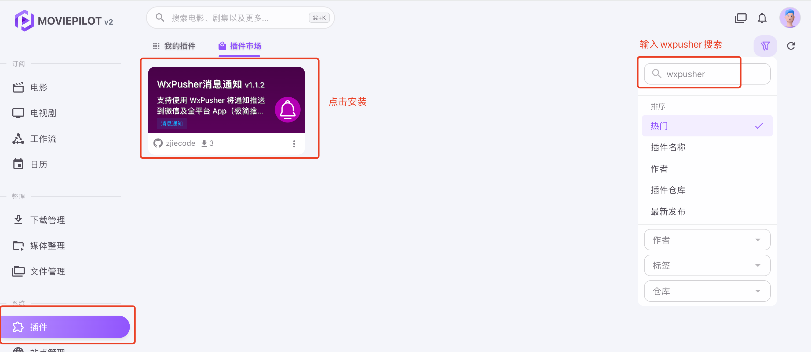
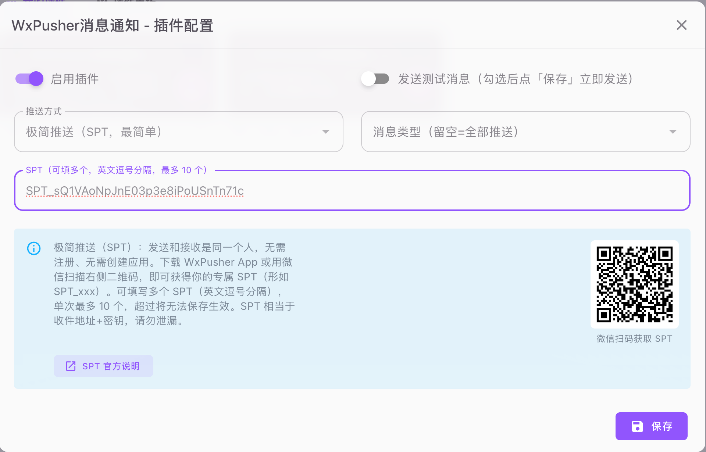
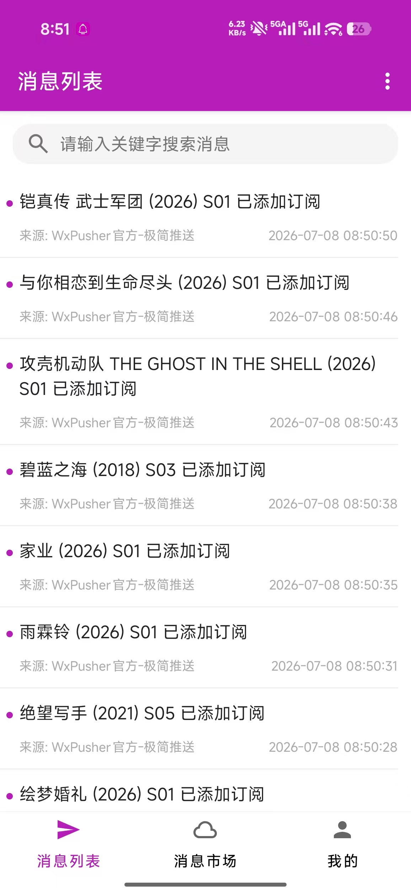
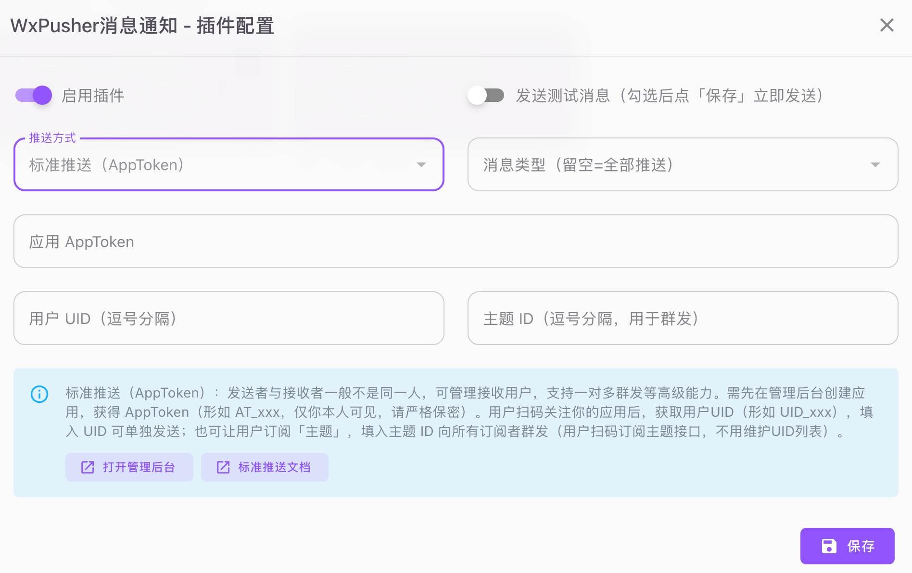

MoviePilot 使用 WxPusher 推送通知教程
通过 MoviePilot 的“WxPusher消息通知”插件，把电影与剧集下载、媒体入库、订阅更新、站点消息和 NAS 系统告警实时推送到手机与电脑。
推荐选择：只通知自己或家人时使用 SPT；需要 Topic 群发、用户管理和回调时使用标准推送。
第一步：安装 WxPusher 插件
- 登录 MoviePilot，进入“插件”→“插件市场”。
- 搜索 WxPusher，选择官方的“WxPusher消息通知”。
- 安装后回到“我的插件”打开配置。

第二步：配置极简推送 SPT
- 按照SPT 指南获取专属令牌。
- 启用插件，推送方式选择“极简推送（SPT）”。
- 填写 SPT；消息类型留空表示全部推送，也可以只选择下载、入库或系统告警。
- 勾选“发送测试消息”并保存。

通知少量家庭成员时，可使用英文逗号分隔多个 SPT，单次最多 10 个：
SPT_xxx1,SPT_xxx2,SPT_xxx3第三步：验证 MoviePilot 通知
保存测试后，确认消息进入 WxPusher 列表并出现系统通知。之后 MoviePilot 的下载完成、入库、订阅更新和异常事件会按插件过滤条件发送。

需要多人群发时使用标准推送
在管理后台创建应用并取得 appToken，再在插件中选择标准推送。可以填写 UID，或创建 Topic 后让用户扫码订阅；新增接收者时无需修改 MoviePilot 配置。

常见问题
SPT 可以配置几个人？
单次最多 10 个 SPT，多个值使用英文逗号分隔。需要更大范围群发时使用 Topic。
测试没有收到通知怎么办？
检查 SPT 是否完整、NAS 是否能访问 wxpusher.zjiecode.com、插件消息类型是否过滤了测试消息，以及客户端通知权限是否开启。
是否与 MoviePilot 内置通知冲突？
不会。插件监听 MoviePilot 通知事件并行转发，不占用其他通知渠道。
免费服务有哪些限制？
发送频率、单次接收人数和设备每日提醒规则可能随线上策略调整，请始终查看官方限制说明，不要依赖教程中固定的历史数值。